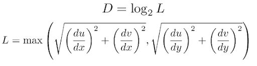
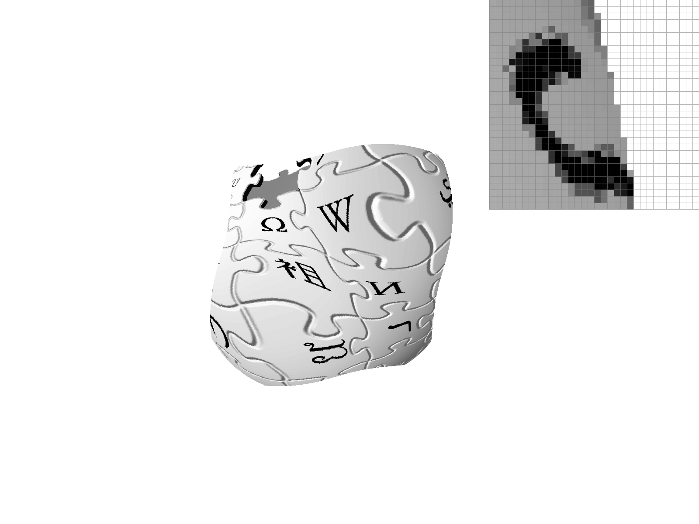
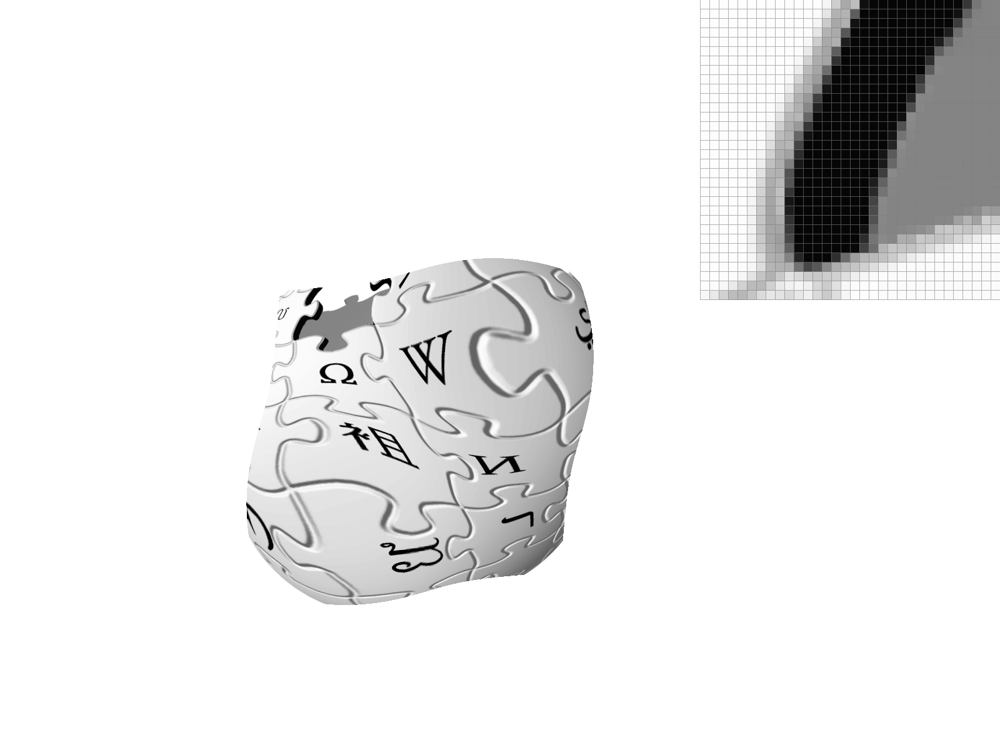
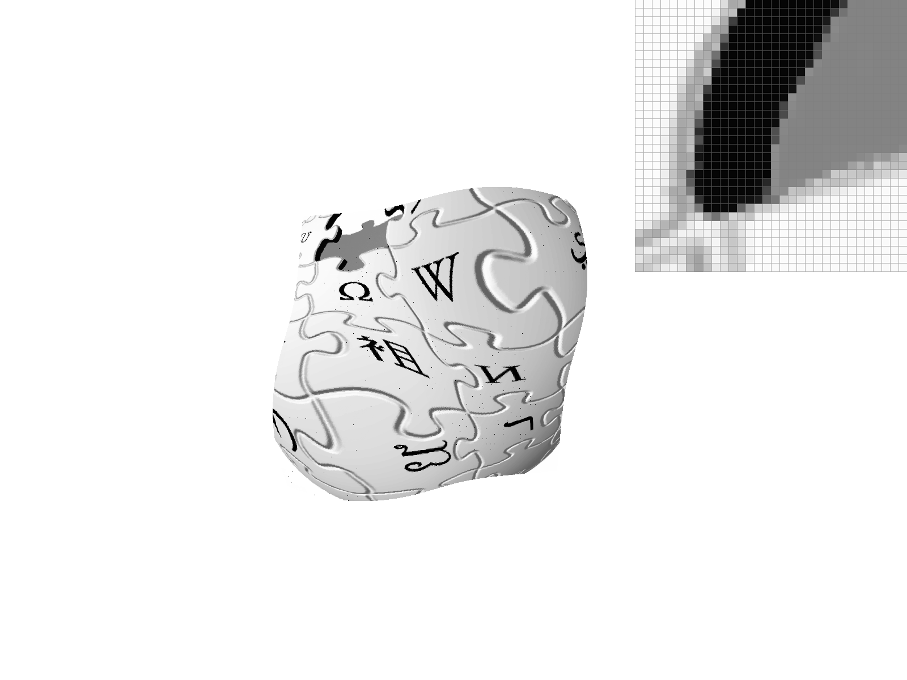

For a given triangle--from points P0 (x0, y0), P1 (x1, y1), and P2 (x2, y2)--our rasterization algorithm iterates through every pixel in the bounding box and uses the Three Line Tests method to determine whether that pixel is inside the triangle. Each line test takes the dot product of the vector between any 2 points (P0, P1, P2) and central pixel coordinates (x + 0.5, y + 0.5) as a vector, with a result greater than or equal to 0 meaning the pixel (x, y) is inside the triangle. The 3 lines created to test each pixel, regardless of clockwise or counter-clockwise winding, were:
L0(x, y) = -(x - x0)(y1 - x0) + (y - y0)(x1 - x0) → between points P0 and P1
L1(x, y) = -(x - x1)(y2 - x1) + (y - y1)(x2 - x1) → between points P1 and P2
L2(x, y) = -(x - x2)(y0 - x2) + (y - y2)(x0 - x2) → between points P2 and P0
To determine a triangle's winding, a vector cross product is calculated on the vector between P0 and P1 [x1 - x0, y1 - y0] and the vector between P1 and P2 [x2 - x1, y2 - y1]. If the cross product is negative, the winding is clockwise, otherwise the winding is counter-clockwise.
If the winding is clockwise, then a pixel (x, y) is inside the triangle if L0, L1, and L2 are not positive values: -L0(x, y) >= 0 && -L1(x, y) >= 0 && -L2(x, y) >= 0.
If the winding is counter-clockwise, then a pixel (x, y) is inside the triangle if L0, L1, and L2 are not negative values: L0(x, y) >= 0 && L1(x, y) >= 0 && L2(x, y) >= 0.
If a given central pixel coordinate (x + 0.5, y + 0.5) is inside the triangle, then the pixel (x, y) is filled with a color. Thus, for every triangle, we form the bounding box by identifying the minimum and maximum x and y coordinates out of P0, P1, and P2, where the bounding box dimensions are (max_x - min_x) by (max_y - min_y).
Supersampling is useful because it helps to reduce aliasing, which makes the overall rasterized image look better to a person's eye. To achieve anti-aliasing via supersampling, our algorithm utilizes a sample rate of 1, 4, 9, or 16 with a sample rate of 1 being no different than not supersampling.
When the sample rate or the frame buffer is adjusted, the sample buffer is resized to be of length width * sqrt(sample rate) * height * sqrt(sample rate) in both of the rasterizing functions RasterizerImp::set_sample_rate and RasterizerImp::set_framebuffer_target because the width and height are scaled by a factor of sqrt(sample rate). Thus, each frame buffer pixel is represented by sample ratesample rate pixels in the sample buffer.
To accommodate supersampling, RasterizerImp::rasterize_triangle first had its points--P0 (x0, y0), P1 (x1, y1), and P2 (x2, y2)--scaled by sqrt(sample rate). The functions determining whether a pixel in the sample buffer is inside of the triangle were unchanged. This is because the sample buffer is already scaled, which means that each of the sample buffer pixels are a part of a single frame buffer pixel, which allows for simply checking the middle of each supersampled pixel comprising a single frame buffer pixel as opposed to checking checking fractional points of a single frame buffer pixel. The last change to the triangle rasterizing function is setting the color of the sample buffer directly rather than calling RasterizerImp::fill_pixel directly. These changes allowed for rasterized triangles to support supersampling.
The RasterizerImp::fill_pixel function was modified to support rasterizing lines and points. Instead of filling a single sample buffer pixel with a color, sqrt(sample rate) * sqrt(sample rate) pixels are filled with a single color so that a single frame buffer pixel will be filled with the aforementioned color, regardless of the supersampling sample rate.
To map the sample buffer to the framebuffer, RasterizerImp::resolve_to_framebuffer was adjusted. The two outermost loops iterate through each sqrt(sample rate) * sqrt(sample rate) squares of sample buffer pixels since each of those squares represents a single frame buffer pixel. Then, the two innermost loops iterate through each individual pixel in the square to average the red, green, and blue values for each pixel color in the square. Once we find the average color of the square, the framebuffer pixel is set to that color.
An example of the supersampling effect is shown below (from left to right and top to bottom, sample rate of 1, sample rate of 4, sample rate of 9, and sample rate of 16):


We see this effect because pixels more isolated from the main triangle are surrounded by white triangles, so the triangle's color (red) is diluted by the surrounding white pixels in the average color computation. On the other hand, the pixels closer to the base of the triangle are not diluted as much and retain their original color for the most part.
This picture of Cubeman represents the robot juggling 3 red balls and standing on one foot. First, Cubeman was modified to appear as a human with skin, a green shirt, and a pair of blue pants. His left leg was rotated 45 degrees to appear as standing on one foot. The hand of the left arm only was rotated 45 degrees to mimic joints. The entire right arm was rotated by 5 degrees. The red balls were added and scaled to be smaller than the head and rotated, each with different values, to represent the balls in motion in the air. For all rotations, additional translations were made to maintain the distance between body parts compared to when Cubeman was standing straight.

Barycentric coordinates are essentially a coordinate system with points relative to the distance between each of the vertices of a polygon. These relative distances can be used to blend colors or textures together. In this situation, each vertex represents a color or texture with barycentric coordinate points that look more like the traits of a vertex the closer the point is to that vertex.
As an example, we can have a triangle with a red vertex, green vertex, and blue vertex. As a barycentric coordinate point gets closer to the red vertex, the coordinate point's corresponding pixel gets more red. The same is true as the barycentric coordinate point gets closer to the green and blue vertices.

The top point is the green vertex. The bottom left point is the red vertex. The bottom right point is the blue vertex. In the middle, there is more of a blending since points are not as close to any vertex.
Color gradient with multiple triangles:

The two pixel sampling methods programmed in this task were used to implement texture mapping on a variety of images. Pixel sampling involves taking one point from the sample space, converting it to its corresponding point in the texture space, and finding the corresponding texel color on the mipmap. This allows us to avoid aliasing of the texture when sampling pixels.
Nearest pixel filtering simply works by taking in a texture value point, scaling it according to the dimensions of the current mipmap level (which for this task is level 0), and then returning the color of the corresponding texel on the given mipmap level.
Bilinear filtering works a bit similarly to nearest pixel filtering, with one difference. Given some texture value point, bilinear filtering involves taking the four closest sample points closest to the texture value point and effectively lerping them horizontally and vertically. In the case for this project, the color values at these respective points were “lerped” together, and the final “lerped” color is returned.
In general, bilinear filtering produces a smoother “blur” effect when compared to nearest neighbor filtering, which typically retains the sharpness of an image. Nearest pixel filtering may be preferred when dealing with pixel graphics, while bilinear filtering may be preferred when dealing with more realism-based graphics.
Pictured above is the Berkeley logo with a texture applied. The supersample rate is 1 per pixel, using nearest pixel sampling, on mipmap level 0. Note that the zoomed in pixel preview is of the distorted restricted trademark symbol ®.
Pictured above is the Berkeley logo with a texture applied. The supersample rate is 16 per pixel, using nearest pixel sampling, on mipmap level 0.
Pictured above is the Berkeley logo with a texture applied. The supersample rate is 1 per pixel, using bilinear sampling, on mipmap level 0.
Pictured above is the Berkeley logo with a texture applied. The supersample rate is 16 per pixel, using bilinear sampling, on mipmap level 0.
As seen above, nearest pixel sampling results in a more sharper blur when compared to the bilinear sample method. In both of the nearest pixel sampling images, the restricted symbol remains relatively sharp, even when supersampling from 1 versus 16 pixels.
Bilinear sampling results in a much more blurred image overall, and when comparing the 1-pixel sampling rate versus the 16-pixel sampling rate, the image of the latter has much of the sharper elements of the original distorted image blurred out / softened.
There will typically be a much more noticeable difference between the two methods when the original image is more pixelated, or when the texture map results in a sharpened version of the image. This is due to the fact that bilinear sampling is effectively a weighted sum of four texel pixels (or more specifically, an average of their colors). Thus, in images with more drastic color changes (such as in pixel art), bilinear sampling will result in a much stronger blurring effect when compared to nearest pixel sampling. When images are more blurry, or have more gradual color changes between neighboring pixels, the visual difference between the two methods will decrease.
Level sampling is a method of texture sampling that allows us to dynamically sample from different resolutions of the original sample image in order to avoid aliasing effects in the final textured, rendered image. The data structure that stores all of the images with differing image resolutions is the mipmap, with level 0 containing the image at its original resolution, and the highest mipmap level containing a single 1x1 pixel. Each pixel in sample space has a corresponding mipmap level D associated with it, which can be calculated using the following formula pictured below:
The above formula effectively takes in a given point in sample space, and returns the corresponding mipmap level to sample texels from, based on the ideal sampling rate.
Once the level of the pixel is determined, level sampling then branches off into two “paths” depending on whether we are level sampling bilinearly versus level sampling linearly/at the zeroth level (as was done in Task 5). If level sampling bilinearly, then we take the floor and ceiling of the corresponding level D and perform linear interpolation on the bilinear pixel sampling of the point at floor(D) and ceil(D) respectively. The color produced by this operation is then returned.
This implementation required the use of a get_level() function to find the D level of a pixel and a sample() method to return the appropriate color based on the level sampling and pixel sampling method passed in.
In regards to rendering speed, pixel sampling is the fastest, due to fewer computations and memory access operations required. Supersampling is the second fastest, although this is highly dependent on the sampling rate; a 4 pixel sampling rate will render faster than a 16 pixel sampling rate. Finally, level sampling is the “slowest”, especially when trilinearly or bilinearly sampling images. Otherwise, if linearly level sampling, return the pixel sampling of the point, taking the texel color from the Dth level (after rounding).
There are trade-offs present in all three sample methods. For example, level sampling may result in the over blurring of distant elements. Level sampling may also cause storage issues depending on the resolution of the original image (and thus the total number of levels stored). Trilinear and bilinear filtering (when used in level filtering) are also computationally costly when compared to just using the pixel sampling method of texture sampling, due to the number of lerp operations and texel reads necessary.
Pixel sampling is the fastest and least costly method, but may result in moires and jaggies appearing in the final render. Pixel sampling retains sharpness in images, and can even further highlight them, which may not be desired.
Supersampling will result in higher quality renders, but is an expensive (and potentially time-consuming) operation. Along with this, when textures are minified, there will be many texels per each pixel footprint, resulting in the need to take many samples, which is a time-consuming operation. Supersampling requires far more memory look-ups when compared to the other methods.
In regards to anti-aliasing, super-sampling performs best, and pixel sampling alone (when using texels from the zeroth mipmap level) is the worst on average, especially when using nearest pixel sampling.
Pictured below are a few examples of various rendered images:
Pictured above is a distorted image of the Wikipedia logo, using nearest level sampling, nearest pixel sampling, at an supersampling rate of 1 pixel.
Pictured above is a distorted image of the Wikipedia logo, using bilinear level sampling, nearest pixel sampling, at an supersampling rate of 1 pixel.
Pictured above is a distorted image of the Wikipedia logo, using bilinear level sampling, bilinear pixel sampling, at an supersampling rate of 1 pixel.
Pictured above is a distorted image of the Wikipedia logo, using nearest level sampling, bilinear pixel sampling, at an supersampling rate of 1 pixel.